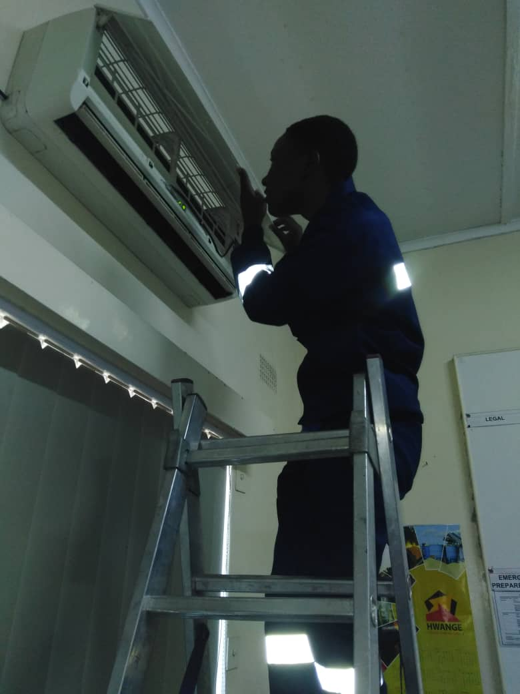
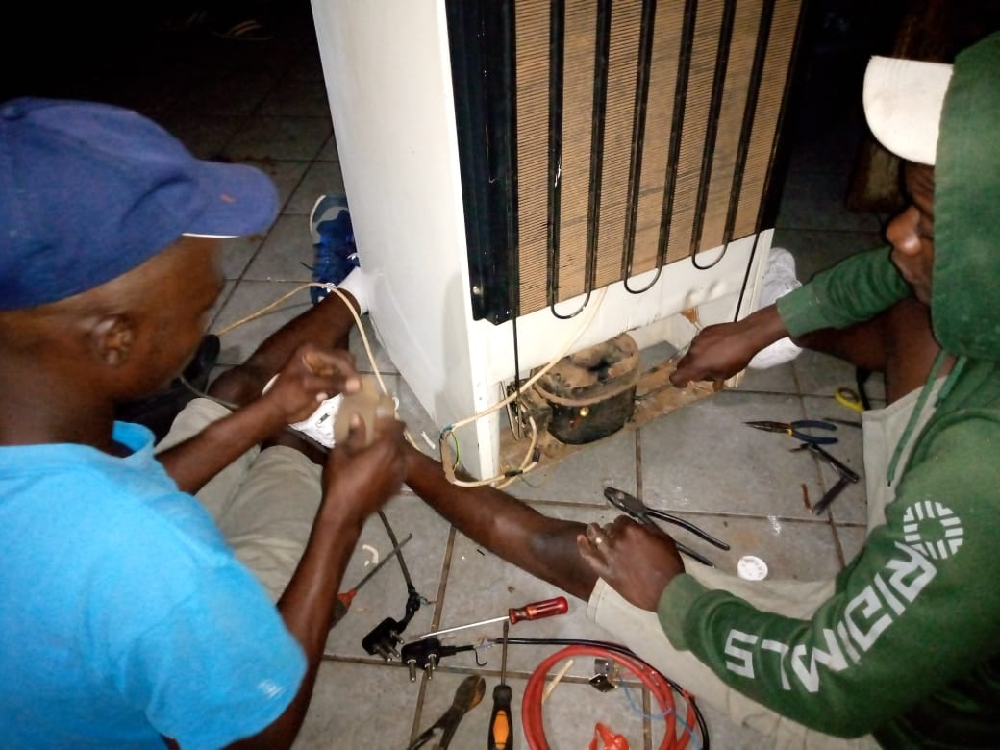

Vaal Refrigeration (M.L)
About Vaal Refrigeration
Home
Contacts
Welcome to Vaal Refrigeration, your trusted partner in refrigeration and air conditioning services in the Vaal region. With over a decade of experience, we
take pride in offering top-notch repairs, fault finding, regassing, compressor repairs and replacements, thermo switch replacements, as well as air
conditioning installations and repairs.

Our Services
At Vaal Refrigeration, we specialize in a comprehensive range of services to cater to all your refrigeration and air conditioning needs. Our team of skilled
technicians is committed to delivering efficient and reliable solutions, ensuring the optimal performance of your appliances.

Fridge Repairs: Whether it's a minor glitch or a major malfunction, our technicians have the expertise to diagnose and repair all types of refrigerator issues
promptly. We understand the importance of a functional fridge in your daily life, and we strive to get it back up and running smoothly in no time.
Fault Finding: Dealing with a troublesome appliance can be frustrating. Our technicians employ advanced diagnostic techniques to identify the root cause of
the problem accurately. We leave no stone unturned in ensuring that every issue is addressed effectively, restoring your appliance's functionality.
Regassing: Proper refrigerant levels are crucial for the efficient operation of your cooling systems. Our regassing services help replenish lost refrigerant,
ensuring optimal cooling performance and energy efficiency.
Compressor Repairs and Replacements: The compressor is the heart of your refrigeration system. Our skilled technicians are equipped to handle compressor
repairs and replacements with precision, ensuring the longevity and reliability of your appliances.
Thermo Switch Replacements: A malfunctioning thermo switch can lead to temperature inconsistencies and poor cooling performance. Our technicians are adept at
replacing thermo switches, restoring your appliance's functionality and efficiency.

Air Conditioning Installations and Repairs: Whether you need a new air conditioning system installed or your existing unit serviced, we've got you covered.
From residential to commercial applications, we offer comprehensive air conditioning solutions tailored to your specific requirements.
Our Commitment
At Vaal Refrigeration, customer satisfaction is our top priority. We are proud to have served numerous satisfied customers throughout the Vaal region, earning
their trust through our professionalism, reliability, and quality workmanship.

Contact Us
Experience the difference with Vaal Refrigeration. Contact us today to schedule a service or consultation, and let us take care of all your refrigeration and
air conditioning needs. With Vaal Refrigeration, you can trust that your appliances are in good hands.
{kind=link}